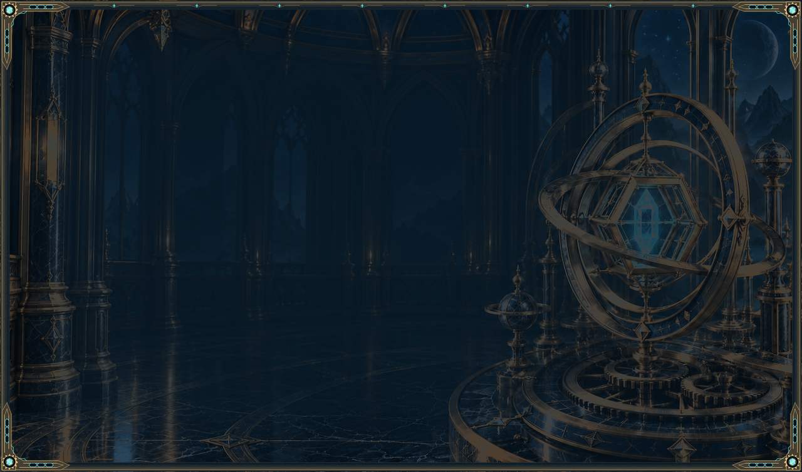
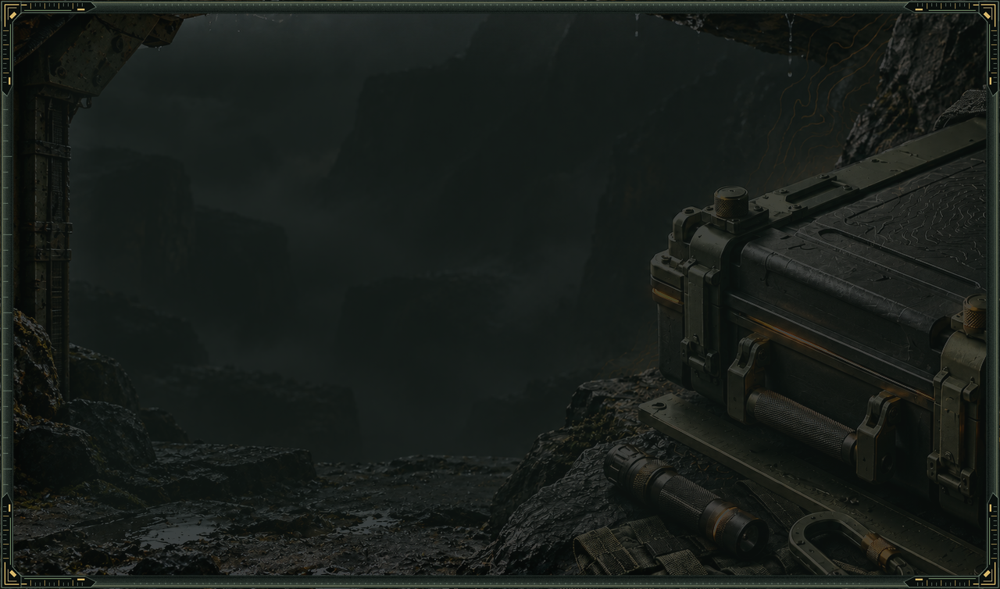
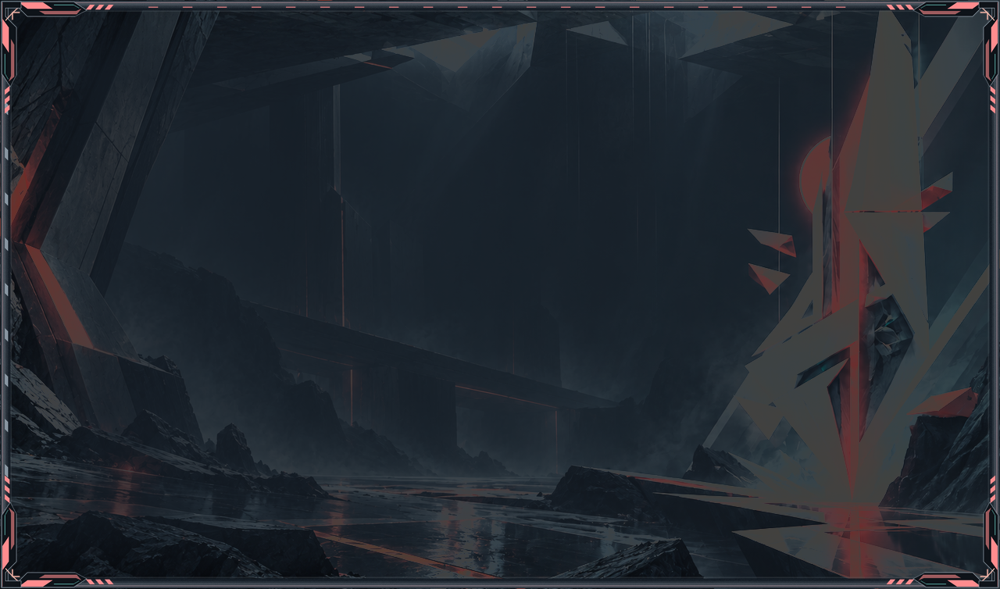
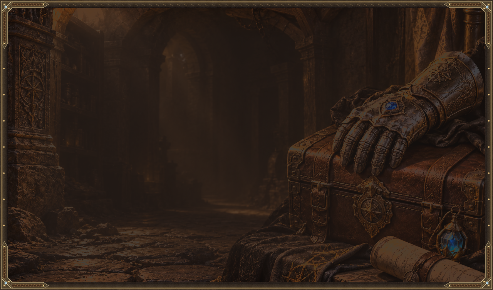
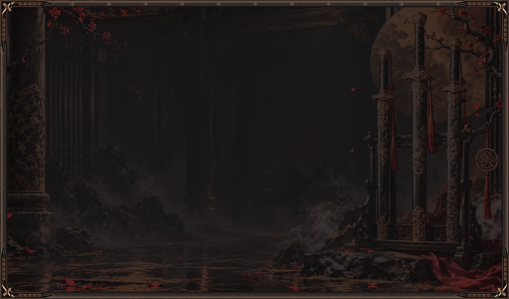
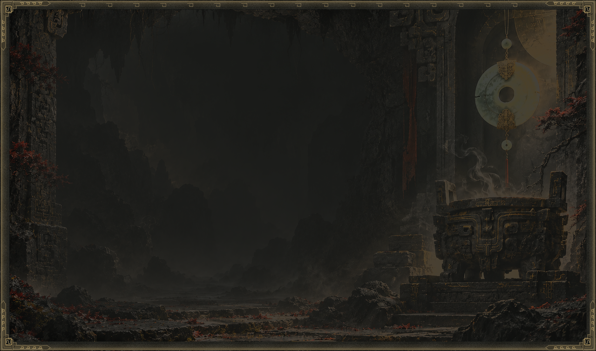
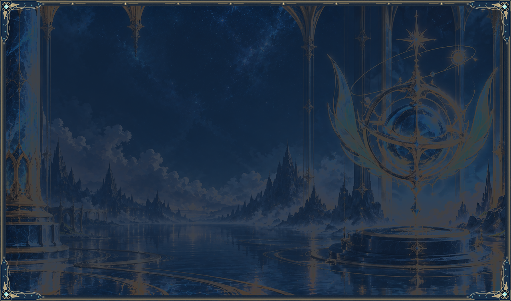
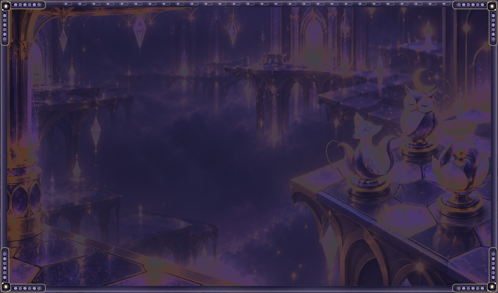
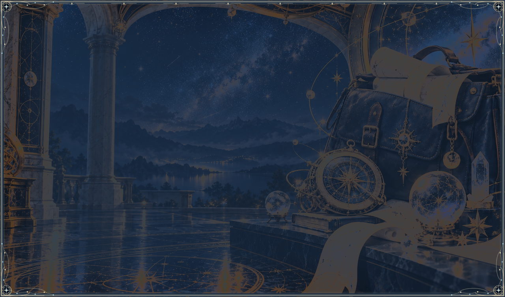
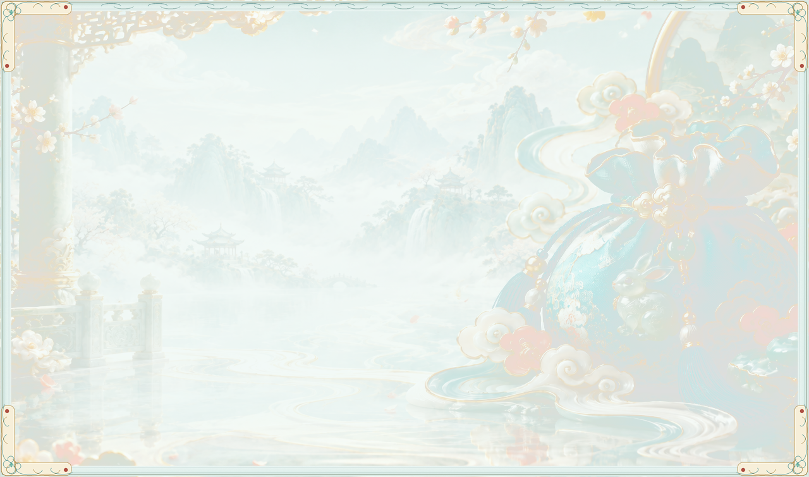

英雄联盟 · 海克斯枢纽
黄铜星仪与观星大厅 · 实际解码最低 ANSI 对比度 4.789:1

三角洲行动 · 战术终端
岩壁掩体与装备平台 · 实际解码最低 ANSI 对比度 4.807:1

无畏契约 · 行动协议
几何遗构与行动装置 · 实际解码最低 ANSI 对比度 4.776:1

地下城与勇士 · 冒险装备栏
石拱地宫与冒险宝箱 · 实际解码最低 ANSI 对比度 4.769:1

永劫无间 · 无间兵器匣
雕柱、梅枝与完整兵器阁 · 实际解码最低 ANSI 对比度 4.786:1

黑神话：悟空 · 灵蕴法宝匣
洞窟石梁、石柱与灵蕴石龛 · 实际解码最低 ANSI 对比度 4.795:1

王者荣耀 · 星曜指挥台
蓝金星宫与云海露台 · 实际解码最低 ANSI 对比度 4.777:1

金铲铲之战 · Agent 备战席
紫金棋局与悬浮备战大厅 · 实际解码最低 ANSI 对比度 4.770:1

原神 · 星旅背包
星图长廊与夜景观测台 · 实际解码最低 ANSI 对比度 4.770:1

梦幻西游 · 三界百宝袋
青瓷仙阁与山水云庭 · 实际解码最低 ANSI 对比度 4.783:1
